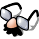
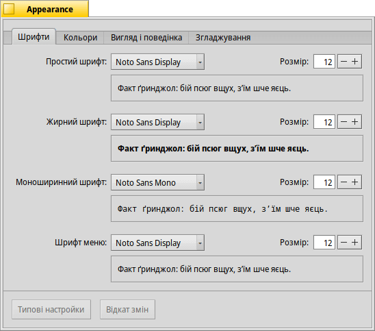
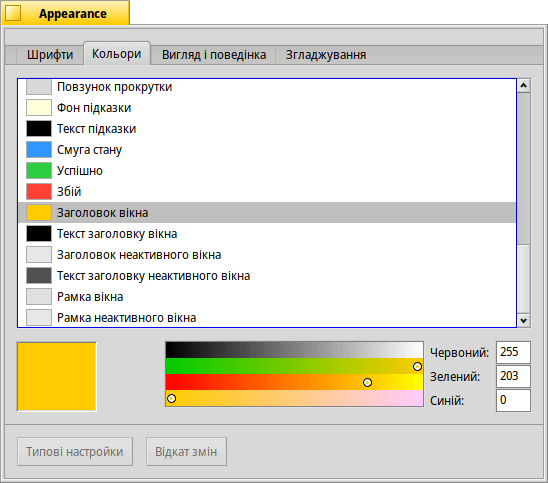
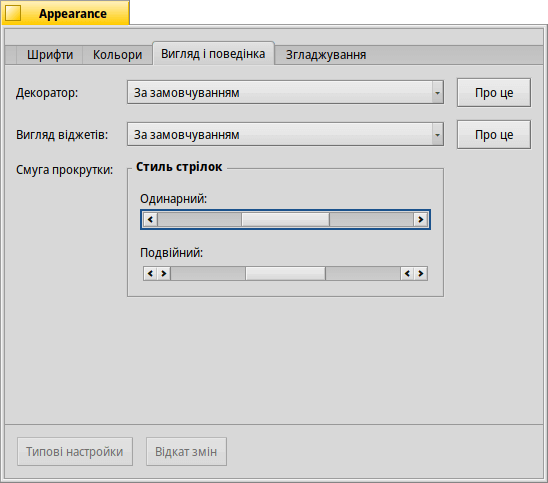
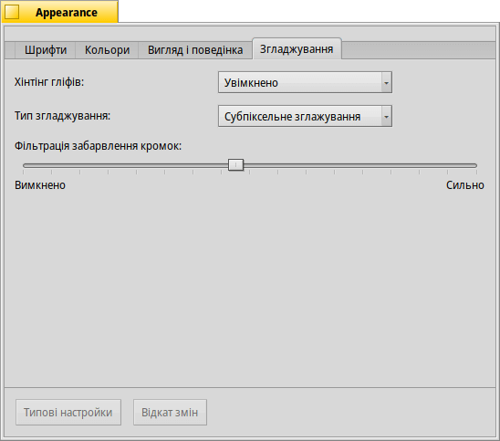
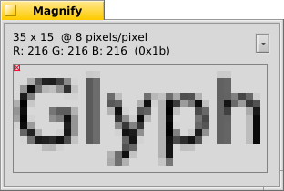
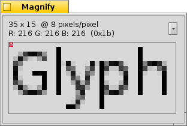
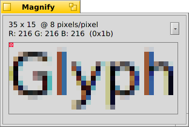

 Appearance (Декорація)
| Deskbar: | ||
| Розташування: | /boot/system/preferences/Appearance | |
| Налаштування: | ~/config/settings/system/app_server/appearance ~/config/settings/system/app_server/fonts |
Панель налаштувань Appearance дозволяє Вам змінювати деякі аспекти візуальних елементів Haiku.
 Шрифти
Шрифти

Haiku визначає три стандартні шрифти для різних цілей. Ви вибираєте шрифт для простого, жирного та моноширинного типів і їхній розмір. Ці шрифти будуть використовуватися в усій системі. Крім того, існує окрема настройка для шрифту, що використовується у меню.
Встановлення нових шрифтів
Нові шрифти, які не входять до складу звичайного пакета .hpkg, можуть бути встановлені копіюванням у підпапки відповідно до типу шрифту (otfonts, psfonts або ttfonts)) спеціального каталогу non-packaged (дивіться розділ Структура файлової системи). Для шрифтів TrueType це буде:
| /boot/system/non-packaged/data/fonts/ttfonts/ | для шрифтів доступних кожному користувачеві. | |
| /boot/home/config/non-packaged/data/fonts/ttfonts/ | для шрифтів доступних Вам особисто. |
Кольори

На вкладці , Ви можете змінювати кольори різних елементів інтерфейсу користувача. Колір добре сприймає перетягування з інших програм, дозволяючи Вам перетягувати кольори, наприклад, з WonderBrush, Icon-O-Matic або з панелі налаштувань Backgrounds.
Вигляд і поведінка

Декоратори визначають зовнішній вигляд вікон та усіх елементів графічного інтерфейсу. Наразі Haiku постачається лише з одним стандартним декоратором. Якщо Ви знайдете і встановите інші декоратори, Ви зможете вибрати інший зі списку який розкривається.
Стандартний декоратор Haiku дозволяє Вам встановити стиль стрілок смуги прокрутки: або одинарні стрілки в кінці смуги для економії місця, або подвійні стрілки — традиційний спосіб для BeOS — що потенційно заощаджує переміщення миші під час прокрутки вгору‑вниз або ліворуч‑праворуч…
Згладжування

На вкладці можна настроїти різні параметри візуалізації на екрані.
Хінтінг гліфів
Активована функція вирівнює всі літери таким чином, щоб їхні вертикальні та горизонтальні краї знаходилися точно між двома пікселями. Результат – ідеальна контрастність, особливо коли маєш справу з чорним на білому. Текст виглядає чіткішим. Існує опція , яка особливо корисна на пристроях з низькою роздільною здатністю, таких як нетбуки. Дрібні шрифти можуть виглядати досить погано, коли увімкнено хінтінг, але з цією опцією Ви все одно матимете перевагу хінтінгу для текстових редакторів і терміналу.
Подивіться, яку різницю робить хінтінг на цих скриншотах зі збільшенням:
|  Хінтінг гліфів: Вимкнено |  Хінтінг гліфів: Увімкнено |
Варто зазначити, що усі вікна Magnify на цій сторінці, звісно, також візуалізуються з різними опціями хінтінгу. Таким чином, Ви можете отримати реальне уявлення про хінтінг, порівнюючи, наприклад, жирний заголовок жовтої вкладки або текст «35 x 15 @ 8 pixels/pixel».
Тип згладжування
Ще однією технікою для покращення рендерингу є Згладжування, яке підтримує всю векторну графіку, а також текст. Він згладжує лінії, змінюючи колір певних пікселів. Існує два способи згладжування:
Спосіб змінює інтенсивність пікселів на кромках.
Спосіб виконує ще кращу роботу, особливо на рідкокристалічних моніторах (з високою роздільною здатністю). Замість інтенсивності пікселя, він змінює його колір, що зсуває кромку на частку пікселя, оскільки РК-дисплеї продукують кожен піксель з червоного, зеленого і синього компонента.
Знову ж таки, два різних методи на скриншотах зі збільшенням:
Відтінки сірого, Хінтінг гліфів: Вимкнено |  Субпіксельне згладжування, Хінтінг гліфів: Вимкнено |
Субпіксельне згладжування додає об'єктам легкого кольорового блиску. Це не всім до вподоби. Haiku дозволяє Вам одночасно використовувати обидва методи згладжування і вибрати оптимальне їх співвідношення переміщенням повзунка.
Ось, наприклад, + у порівнянні з +
Відтінки сірого, Хінтінг гліфів: Увімкнено | Субпіксельне згладжування, Хінтінг гліфів: Увімкнено |
У нижній частині панелі розташовані дві кнопки:
| повертає все до стандартних (типових) значень. | ||
| повертає настройки, які були встановлені до запуску Apperance. |